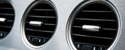
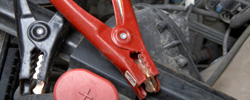
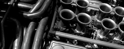

Auto Maintenance Services
The Auto Repair Shop provide regular preventive maintenance services in addition to complete repair services.
To save your money and future issues with your vehicle, we recommend adhering to your manufacturer's factory scheduled 30K/60K/90K mile maintenance schedule.
Air Conditioning Services
The Auto Repair Shop performs repairs on air conditioning systems for most vehicle makes and models.
The Auto Repair Shop performs repairs on air conditioning systems for most vehicle makes and models.
Air Filtration Services
Air filters stop dust and dirt from entering the engine and your vehicle's interior cabin
each should be replaced at least annually or every 12,000 miles.
Brake Services
Routine brake inspections and maintenance help to ensure that your vehicle's brake system
operates as designed at all times.
Cooling System Services
Did you know that over time coolant can lose its effectiveness? This can lead to the engine overheating
and other consequent damage if not replaced every 24 months. The Auto Repair performs cooling system repairs on water pumps, radiators, and thermostats for most vehicle makes and models.
Diesel Engine Service
Because diesel engines operate differently than gas engines, different services are required in order
to keep the engine in top condition. It's important to perform regular maintenance and fluid changes to avoid the risk of breakdowns and extensive repairs with diesel engines.
Drivetrain Services
What exactly is a drivetrain system? This system includes differentials and a transfer case which generates power
from the engine to the front and rear axles when pushing the gas pedal. So why is this important? Drivetrain repairs and fluid changes help to maintain precise handling in all driving conditions. The Auto Repair performs differential and transfer case repairs for most vehicle makes and models.
Electrical System Services
The condition of your electrical system is vital to your vehicle's basic functioning and performance.
The Auto Repair will: Inspect your battery, starter, alternator, and ignition Make repairs and replacements when necessary
Engine Services
As the life force of your vehicle, it's important to perform regular maintenance and fluid changes to
the vehicle's engine. The Auto Repair performs all major and minor engine repairs and inspects all fluids and belts to maintain a high-performing, dependable engine.